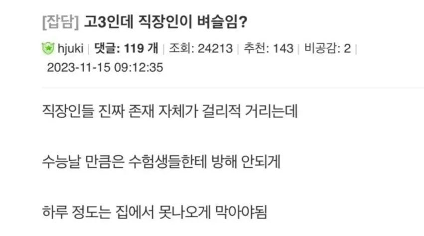

지나가던 현직 직딩인디 이거 맞말임

지나가던 현직 직딩인디 이거 맞말임
제발 학생들이 일어나서 꼭 좀 관철시켜줘 원래 나라가 어지러울 때는 학생들이 일어서야 하는거야
젭알
1년에 단 한번뿐인 수험생들의 중요한 날을 망치고싶지 않음...
ㅆㅇㅈ
대학원생도 포함 해주나요
아이고 나으리 왜 천것들하고 어울리십니까요
거긴 대감님이 허락 해준답니까?
대학원생은 전날에 퇴근을 금지시킬듯
대학원생은 출퇴근이 없지 않나요?
대학원생은 랩실에 가둬놔야지
대학원생은 랩실에 갇혀서 못나오겠지
직장인새기들 눈치 없음 학생들 축제에 낄려고 밖으로 나오는거 부터가 경찰 소방관을 포함해 모두 그날은 집에 있도록
우리도 그러고 싶어
직장인인데, 백번 옳은 말입니다.
저거 반대임
직장인데 고3 벼슬아님?
이거마따 직장인 따위가 감히 수능날 집을 나서면 안되는거지. 국가차원에서 강제 재택을 해야한다
저새끼.. 고 3 아닐거야....
당장 진행시켜!
ㄹㅇ 수능날만 집으로 격리시키거나 바다랑 산으로 유배보내야됨
수능날에 출근하는 직딩들
줜나 걸리적거려. 걍 집에서 좀 쉬어!
솔직히 그날 하루쉰다고 세상안바뀜 그러므로 쉬는게 맞음
ㄹㅇ
그럼그럼 하등 쓸모없는 노예들 좀 그날은 집에 가둬놔라 제발
어딜 고3나오는데 출근을 하려고...
제발 막아주세요 갇혀 있을게요
이거맞다
감히 수험생님들 방해하지 않도록 직장인놈들은 전부 시험 끝날때까지 집에서 못나오게 해야함
저놈을 하버드로
쇤네가 혹시 심기를 거슬리지 않게 전날부터 연차를 사용해도 될까요?
ㄹㅇ 나도 고삼이라 아는데 그냥 직장인들 출근하는거 자체가 개꼴받음 그냥 기어나오지 말라고 법으로정해
미래를 볼줄 아네 너 하버드
나 고 3인데 이거 맞다
제발 부탁드립니다... 제발 출근 막아주세요 제발..
군필여고생인데 이거맞음
뭔 소리 하는거냐 고3 얘들 컨디션 관리시킬려면 한달은 출근시키지 말아야 됨.
고3 학생이 똑똑하네 당장 시행해줘
지나가던 수험생인데 1주일전부터 거슬림
무슨 하루가지고 됨? 시험전 후로 해야지
제발요..ㅠ
ㅆㅂ..
수험생분들 전날도 직장인보면 스트레스받으니까 전날, 당일 해서 이틀 쉬게 해야될듯?
서울대 법대로 보내자
역시 고3이라 생각이 깊네 지혜로워
ㄹㅇ.. 출근하기 싫다
ㅋㅋ 그래 뭐 일년에 하루정도는 봐줄게잇
이거맞다